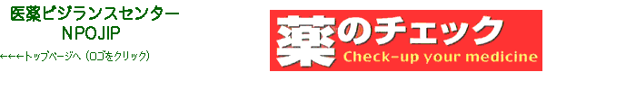
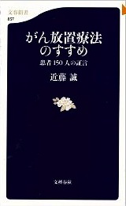

書評コーナー
季刊誌47号より
がん放置療法のすすめ 患者150人の証言
■近藤 誠著／文春新書
■ISBN-10: 4166608576
■ISBN-13: 978-4166608577
■212頁 価格780円（税別）
従来のがん治療法にアンチテーゼを唱え続けてきた近藤氏の近著です。
本書の趣旨は明快です。一般に「がん」とされるものには、他の臓器に転移している「本物のがん」と、 多臓器へ転移しない「がんもどき」の二種類があり、後者は最小限の治療で済むが、前者は手術や抗がん剤治療をしても結局は命を落としてしまう、 だから様子を見るという「がん放置療法」を治療の選択肢に加えよう、そう推奨しているのです。
「がんには早期発見、早期治療」と多くの人は考え、がん検診が日々多用されています。 しかし「本物のがん」であれば検診で見つかる頃には転移がかなり広がっていて切除手術はほとんど意味をなさず、 また抗がん剤治療は自身の体の一部（がん）を叩こうとする行為であって患者の体に利はなしと近藤氏は指摘します（ただし、 抗がん剤で治る可能性のある血液系のがんや小児がん、子宮絨毛がん、睾丸腫瘍は対象外）。
そもそもがんは老化現象であり、だからこそ放置したとしても経過が比較的温和で実際の症状緩和の方法も確立しています。 治療の選択肢が広がるという意味合いにおいても、本書で提起される「がん放置療法」の意義は大きいといえます。（み）